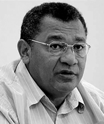

Nascido em 28 de outubro de 1958, em Araguaína, filho de Avany Galdino da Silva e Mana Matos da Silva. Atuou na política como vereador em Araguaína (1983-1987), deputado estadual suplente pelo PMDB (1987-1988) e deputado federal pelo PSDB, eleito em 1989, tendo renunciado ao mandato estadual. Foi reeleito deputado federal para a legislatura 1991-1995 pelo Estado do Tocantins.
Durante a vida estudantil, participou da reorganização do movimento estudantil secundarista em Goiânia (1979-1981), presidiu o centro acadêmico de História na UFG (1982), foi diretor de imprensa e divulgação do centro acadêmico de Direito na Universidade Católica de Goiás, além de atuar como educador sindical na Federação de Agricultura dos Trabalhadores de Goiás (1981-1982).
